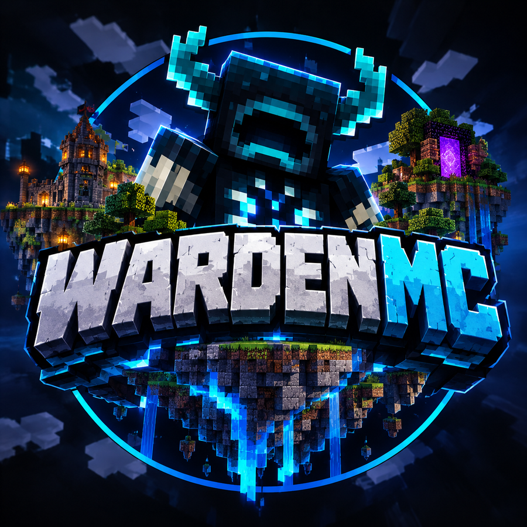

Deep Dark Survival
Ana mod. Mağaraları, antik şehirleri ve Warden'ı sunucuya özel görevlerle yaşa.
WardenMC'de her adımın duyulur. Hayatta kal, kasabanı kur, rakiplerini alt et. Ama gürültü yapma.

Tek IP, birden fazla mod. İlerlemen modlara göre ayrı tutulur.
Ana mod. Mağaraları, antik şehirleri ve Warden'ı sunucuya özel görevlerle yaşa.
Küçük bir adada başla, ekonomini büyüt.
Klanını kur, bölge kap, savaşı kazan.
Kendi kasabanı yönet.
Hızlı ve rekabetçi savaşlar.
Arkadaşlarınla kısa oyunlar.
Rütbeler coin ile alınır. Avantajlar tüm modlarda geçerlidir.
| Sculk | Sentinel | Warden | Deep Dark | |
|---|---|---|---|---|
| Renkli isim | ✓ | ✓ | ✓ | ✓ |
| Ek ev sayısı | 2 | 3 | 5 | 10 |
| Lobide uçuş | – | ✓ | ✓ | ✓ |
| Öncelikli giriş | – | – | ✓ | ✓ |
| Haftalık kasa anahtarı | – | – | – | ✓ |
| Fiyat | 250 coin | 600 coin | 1200 coin | 2500 coin |
Ödeme onaylanınca coin hesabına eklenir. Rütbe, anahtar ve setler coin harcadığın anda sunucuya iletilir.
Kredi kartı ve banka kartı ile PayTR güvenli ödeme sayfasından ödeme yapabilirsin.
Destek için Discord'dan bilet aç, sipariş numaranı yaz.